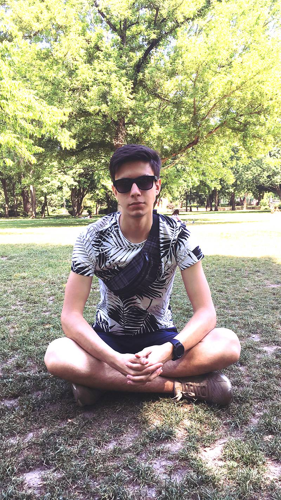
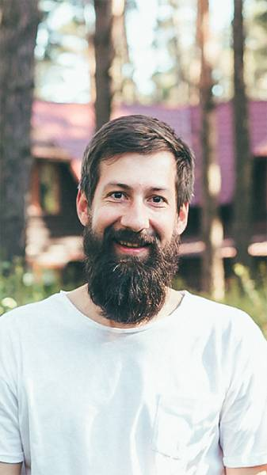

- 
Ярослав Вовченко
- - JavaScript Software Developer в SD Solutions
- - Досвід роботи JavaScript 2 роки
- - Більше 5 готових web-проектів
Навчить як правильно кодити і створювати односторінкові сайти використовуючи HTML/CSS.
- 
Максим Норець
- - Front-end Developer
- - 4 готових web-проектів
Навчить розробляти зручний інтерфейс користувача для сайту.
Софія Гордієнко
- - Двічі сертифікований тренер Soft Skills
- - Project Manager в “Brighta”
- - PO
Навчить застосовувати методологію Scrum і Agile в роботі над IT проектом.